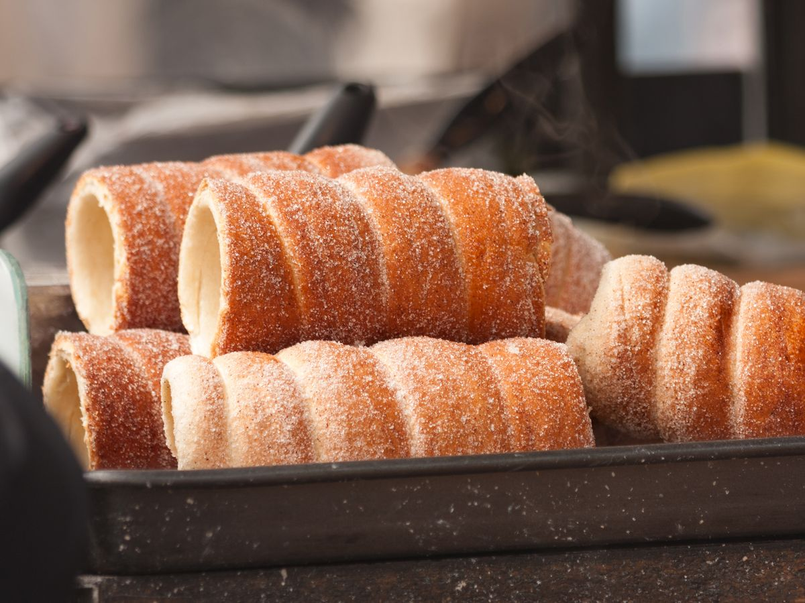

Trdelník
Domů
Svíčková
Knedlíky
Trdelník
Trdelník
Trdelník je sladké pečivo oblíbené především na trzích a festivalech.
Ingredience:
500 g hladké mouky
200 ml mléka
50 g cukru
50 g másla
2 vejce
25 g droždí
Cukr a skořice na obalení
Postup:
Droždí smíchejte s teplým mlékem a cukrem, nechte vzejít kvásek.
V míse smíchejte mouku, vejce, máslo a kvásek, vypracujte těsto.
Těsto nechte vykynout, poté vytvarujte válečky a omotejte je kolem trubek.
Pečte v troubě do zlatova a ještě teplé obalte ve směsi cukru a skořice.
